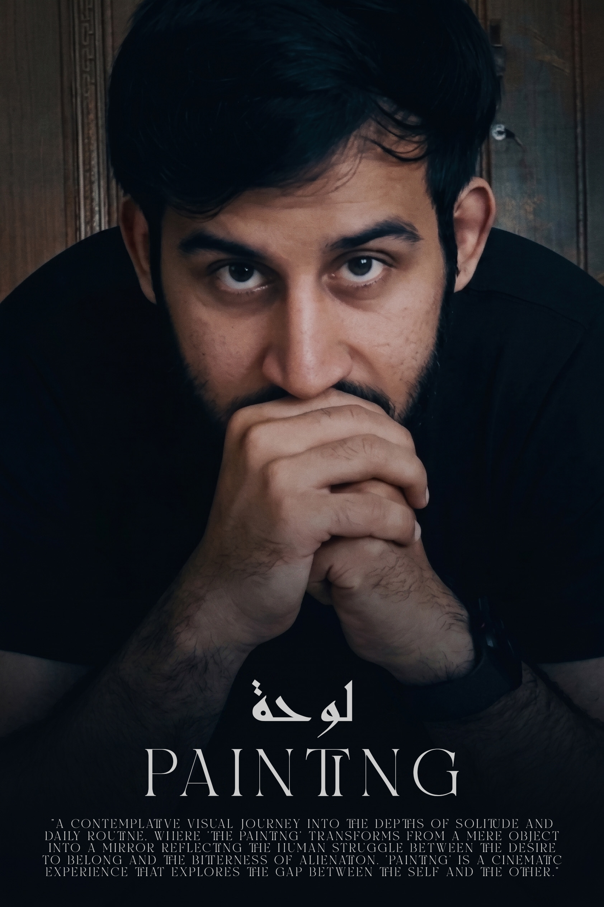

زكي يحيى
صانع أفلام تجريبي، كاتب، ومدير إبداعي
يركز على السينما الفلسفية، الدستوبية، والطليعية
الحَفْر السينمائي: بيان المخرج
السينما، بالنسبة لي، ليست مجرد وسيط لسرد القصص؛ بل هي فعل من أفعال التنقيب الروحي والفلسفي. إنها السعي لتجسيد ما لم يتجلَّ بعد، والتقاط الصراعات الصامتة للوجود قبل أن تتخذ شكلاً.
بحثي السينمائي متجذر بعمق في البحث عن أنطولوجيا الحقيقة. بالاستناد إلى الثقل الوجودي العميق للفلسفة النيتشوية والسكون التأملي الكئيب للتقاليد التاركوفسكية، لا أقارب الشاشة كلوحة رسم، بل كمرآة تعكس أطلال الروح الحديثة.
في رحلتي المستمرة — من تشريح ميكانيكية الواقع في "صناعة الوهم" إلى استكشاف الاغتراب ما بعد الصناعي في "المدينة العظيمة" — سعيت دائماً لدفع حدود التعبير البصري. واليوم، نقف على حافة أفق جديد: الصورة التخليقية.
في عملي الأخير "أركيولوجيا الوجوه التي لم تولد"، أغوص في "الفضاء الكامن" للذكاء الاصطناعي. لا أرى الخوارزميات مجرد أدوات، بل كـ "مطهر رقمي" حيث تناضل الذكريات التي لم توجد قط والهويات التي لم تولد بعد بصعوبة بالغة من أجل التجلي. من خلال عدسة كئيبة أحادية اللون والقوة القاسية للسينما الصامتة، أهدف إلى استخراج هذه الوجوه التي لم تولد، متسائلاً عما يعنيه أن تكون إنساناً في عصر يمكن فيه للآلات أن تحلم بالحزن البشري.
أصنع الأفلام لأوثق الانهيار الهادئ والانبعاثات الصامتة للروح البشرية. عملي هو دعوة للنظر في الهاوية، ليس بخوف، بل برغبة عميقة في فهم معمارية أوهامنا.

CASE 0: TOMORROW (2026)
محاكمة سينمائية للزمن. متجاوزاً السرد التقليدي، يجسد هذا المشروع التأجيل البيروقراطي للوجود — ترجمة بصرية للكابوس الكافكاوي والرعب النيتشوي للروح الصناعية الحديثة. من خلال تجريد السرد من الحوار والراحة الموسيقية، يُجبر المشاهد على تحمل تآكل الانتظار جسدياً، مما يحول الشاشة إلى مطهر وجودي.

ARCHAEOLOGY OF UNBORN FACES (2026)
تنقيب سينمائي عميق في "الفضاء الكامن" للذكاء الاصطناعي. متجاوزاً نقد الخداع الرقمي، يبحث هذا المشروع في أنطولوجيا الوجود الاصطناعي بحد ذاته. بتبني فلسفة تاركوفسكي في "النحت في الزمن"، تُجبر اللقطات البطيئة المؤلمة والصمت الثقيل المشاهد على تحمل الوزن المادي للزمن داخل آلة لا تدرك الفناء. الوجوه الخالية من العيوب التي تنبثق ليست انعكاسات للواقع، بل "واقع فائق" (Hyperreality) بودرياري يخفي غياب الأصل.

THE GREAT CITY (2026)
مستوحى من التحفة الفلسفية لفريدريك نيتشه "هكذا تكلم زرادشت"، يمثل هذا المشروع الطليعي مرآة سينمائية قاتمة للمدينة المعاصرة. يشرح بصرياً النبوءة المخيفة لـ "الإنسان الأخير" — التجلي الأقصى للعدمية الروحية والانحطاط الثقافي داخل الحشد الحديث. من خلال عدسة تجريبية لا تساوم، يجرد الفيلم تقدم المدينة من رومانسيته ليكشف الجوهر الأجوف لمجتمع عالق في التكرار الآلي.

THE ILLUSION INDUSTRY (2026)
نقد سينمائي مكثف للواقع الفائق والخداع الرقمي. يستكشف هذا المشروع الخطوط الباهتة بين الوجود الإنساني الأصيل والوقائع المحاكاة، متسائلاً عن السرديات المصطنعة التي تهيمن على ثقافتنا البصرية. بعد تجريده من التقاليد السينمائية السطحية، يتحدى الفيلم المشاهد لتشريح أنطولوجيا الصورة والإنتاج المنهجي للوهم في العالم الحديث.

PAINTING (2024)
رحلة بصرية تأملية في أعماق العزلة والروتين اليومي، حيث تتحول "اللوحة" من مجرد شيء إلى مرآة تعكس الصراع الإنساني بين الرغبة في الانتماء ومرارة الاغتراب. "Painting" هي تجربة سينمائية تستكشف الفجوة بين الذات والآخر.